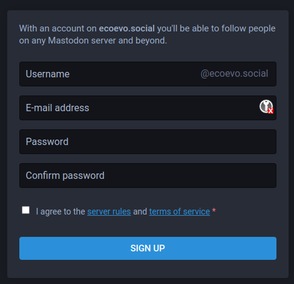
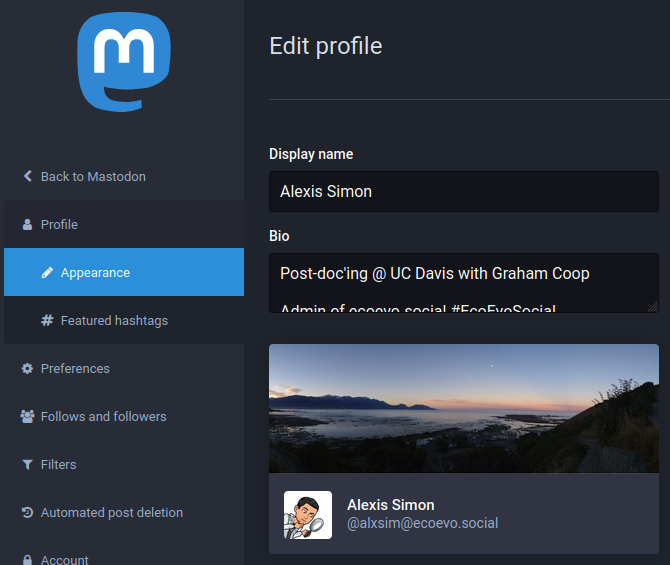
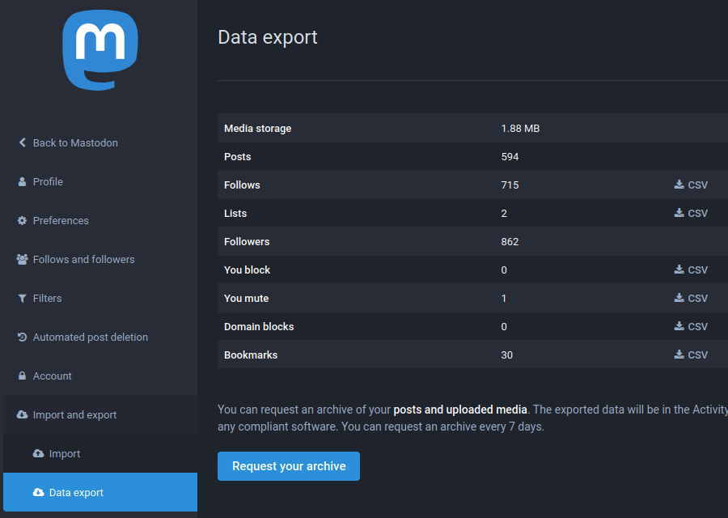
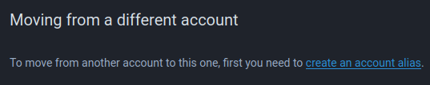
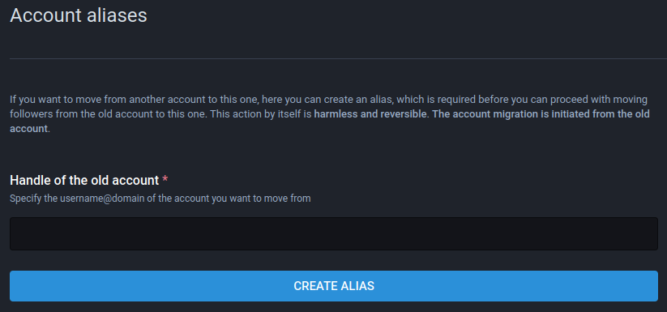
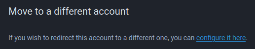
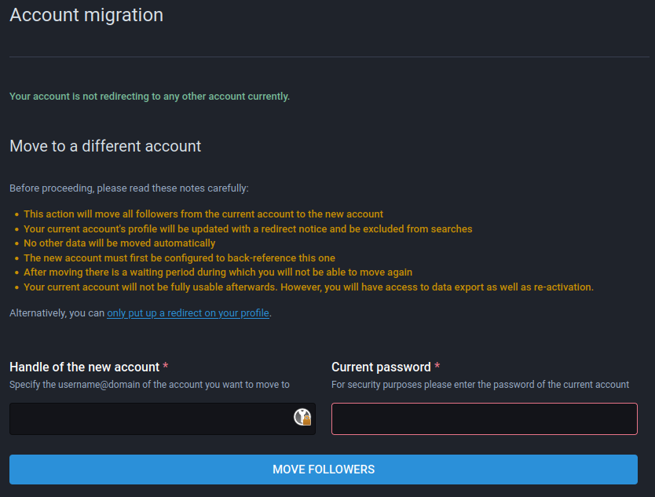
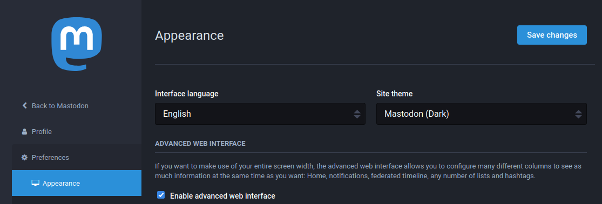
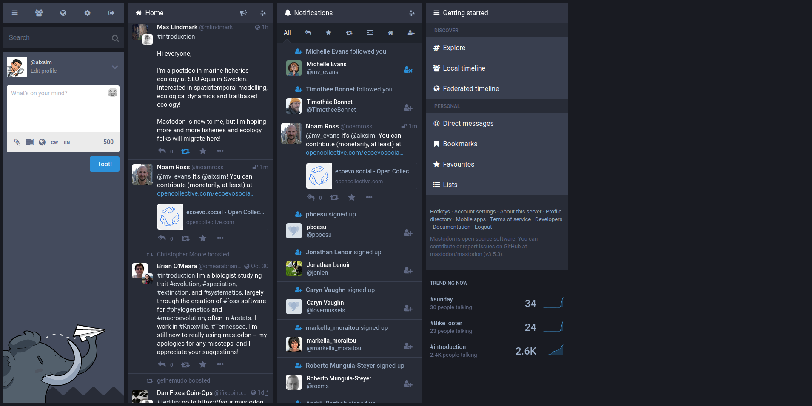

Tips
We’ve gathered a few useful tips and handy Mastodon features to improve your experience.
Migrating your account
Let’s say for example you want to migrate from mastodon.social (your old server) to ecoevo.social (your new server).
An account is not really “moved” from one server to another. Instead, a new account is created on the new server and Mastodon make it easy to export/import the followed account list and followers from the old server to the new one.
Here are the steps to migrate.
A) On the new server ecoevo.social:
- Open a new account on ecoevo.social with the username you want (it does not have to be the same one as on mastodon.social)
- Set up your profile on your new account, such as displayed name, profile picture, and bio.


B) On the old server mastodon.social:
- Go to
Preferences > Import and export > Data exportand export in CSV format every category you wish to transfer to the ecoevo.social server.

C) On the new server ecoevo.social:
- Go to
Preferences > Import and export > Importand import back the CSV files for each category of data you want.

- Go to
Preferences > Account > Account settingsand in the section “Moving from a different account” click on “create an account alias” link. You need to alias your two accounts, this is necessary for the next step.


D) On the old server mastodon.social:
Go to Preferences > Account > Account settings and in the section “Move to a different account” click on “configure it here” link. On this page you will indicate your new account handle (with your new server) such as TootJedi@ecoevo.social and your password for this new account on ecoevo.social.


Once this is all finished, your followers will be transfered to your new account (i.e. a follower will automatically unfollow your old account and follow your new account). This operation can take a few minutes or several hours to complete, depending on the computational load of servers. A redirection has been put in place on your old account.
As a final step, when you have checked that all your followers and followed account, lists, muted, and/or blocked accounts have been correctly transfered, you can delete your old account. Head to your old account settings on mastodon.social in Preferences > Account > Account settings, at the bottom of the page in the section “Delete account” click on the “proceed here” link. Please be aware that account deletion is irreversible and will condemn your handle from ever being used again.
Finding your network
Whether you are migrating from Twitter or not, here is a list of useful tools that can help you find people you would like to connect with.
- Finding people by topic:
- Use your Twitter information to search for people on Mastodon:
Information and topic groups
You can use Guppe groups to follow posts from whole groups of people. Briefly, all posts that contains the @GroupHandle@a.gup.pe handle will be seen by group followers.
Here are some groups of interest to the community that you can interact with:
Advanced web interface
A more advanced/powerful web interface can be enabled in Settings > Preferences > Appearance.

This will give you access to an interface like this one:

Keyboard shortcuts
If you like keyboard shortcuts, the web interface has hotkeys that can be found here.
This link can be opened from the bottom of the side panel by clicking on Hotkeys.